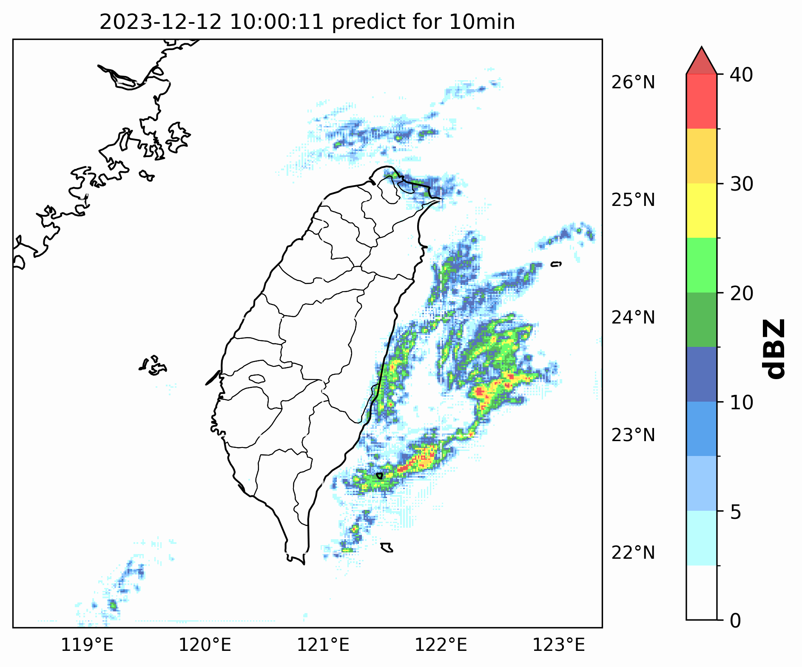

KAI I
Research Experinence
Data Analysis
Next Frame Prediction & Classification (AI)
Generative AI & Large Language Model Application
Data Analysis (Python)
Next Frame Prediction & Classification (Python; AI)
Generative AI & Large Language Model Application (Python; AI; CS50)
AI prediction product

WGAN-GP strucure is used to train the generator.
More accurate than the traditional nowcasting.
This product can predict the propogation of radar reflectivity in 60 min.
More details in
AI application on weather prediction.
Contact me:
kaiyilin0927@gmail.com
KAI-I Linkedin
Data Analysis (Python)
Data analysis of atmospheric science
Cloud seeding analysis
Build an instrument QA/QC system.
Modifying WRF model to validate the scientific questions.
Terrain precipitation analysis
Retrieve 3D wind field by WISSDOM.
Investigate the reason of heavy rainfall in YiLan.
Next Frame Prediction & Classification (Python; AI)
AI application on weather prediction
Binary classification of thunder storm
Deep Nueral Network is used.
Improve 25% accuracy than original AI module.
Next Frames prediction of radar reflectivity
Develop WGAN-GP structure for training.
Prediction of AI is better than the traditional method.
Generative AI & Large Language Model Application (Pyhton; AI; CS50)
Lesson plan of Generative AI and LLM for searching glossary
Educational Project of Generative AI
Analyzing the Principles and Applications of Generative AI
LLM for searching glossary (CS50)
Transformer, Python, and SQL are used.
Similar to RAG method.